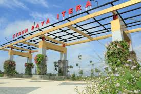

Selamat Datang di Kebun Raya ITERA
Kebun Raya ITERA merupakan kawasan konservasi dan penelitian flora khas Sumatera yang berlokasi di Institut Teknologi Sumatera. Kebun Raya ITERA merupakan kawasan konservasi dan penelitian flora khas Sumatera yang didirikan untuk mendukung pelestarian keanekaragaman hayati. Terletak di lingkungan Institut Teknologi Sumatera (ITERA), kebun raya ini menjadi pusat edukasi, penelitian, dan rekreasi yang terbuka bagi masyarakat luas.
Sebagai salah satu kebun raya di Indonesia, Kebun Raya ITERA berperan penting dalam menjaga kelestarian flora endemik Sumatera yang semakin terancam oleh perubahan lingkungan dan aktivitas manusia. Pengunjung dapat menjelajahi berbagai koleksi tanaman langka, menikmati suasana hijau yang asri, serta mempelajari lebih dalam tentang pentingnya konservasi tumbuhan bagi ekosistem.Selain sebagai tempat penelitian dan pembelajaran, Kebun Raya ITERA juga menjadi destinasi wisata alam yang menarik. Dengan lanskap yang tertata indah, kawasan ini cocok untuk kegiatan edukasi, rekreasi keluarga, maupun sekadar melepas penat di tengah kesibukan. Jelajahi keindahan dan manfaat dari Kebun Raya ITERA tempat di mana alam, ilmu pengetahuan, dan pelestarian bertemu dalam harmoni. 🌿✨
Informasi
| Informasi | Detail |
|---|---|
| Jam Operasional | Setiap hari pukul 08.00 - 17.00 WIB |
| Lokasi | Institut Teknologi Sumatera (ITERA), Lampung Selatan |